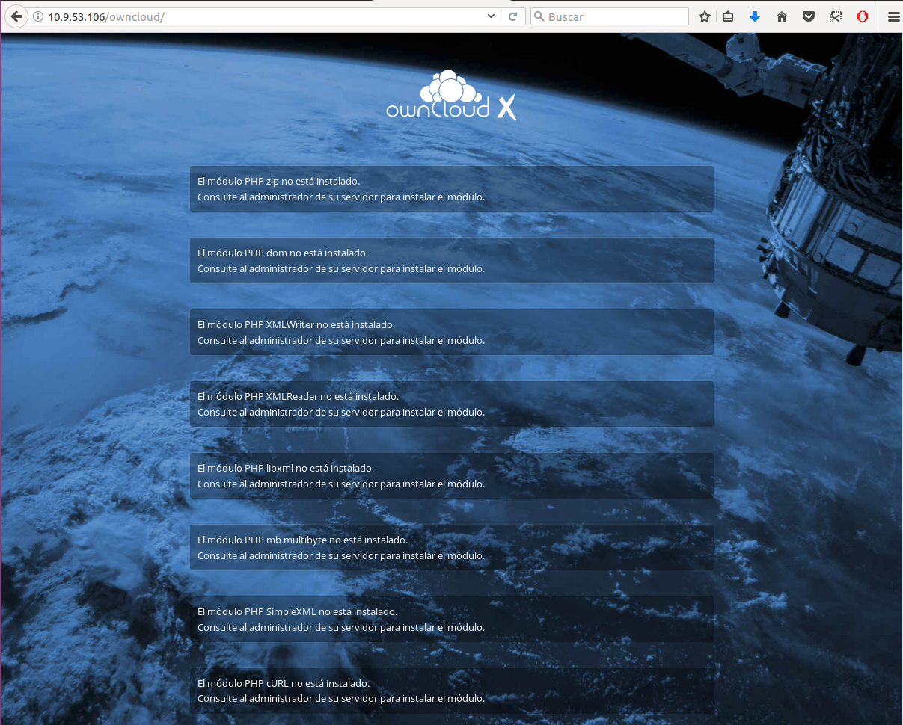
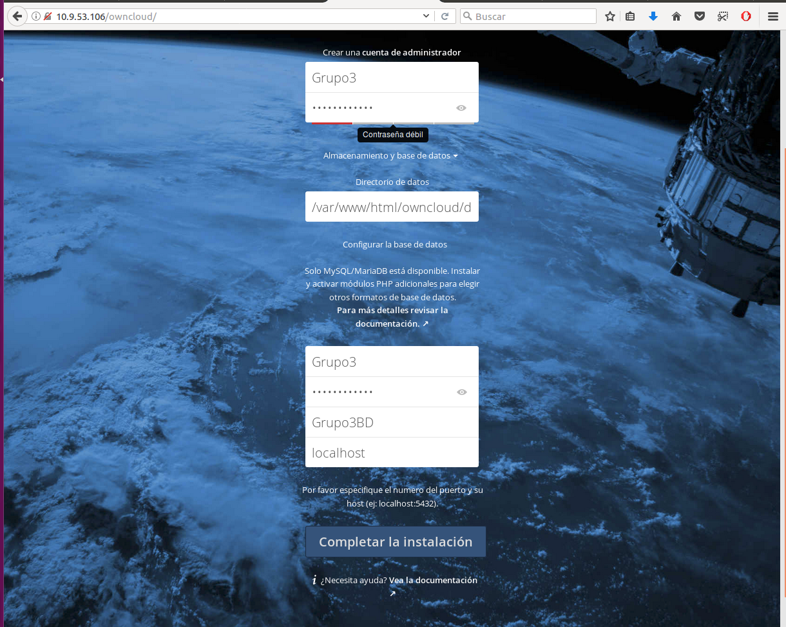
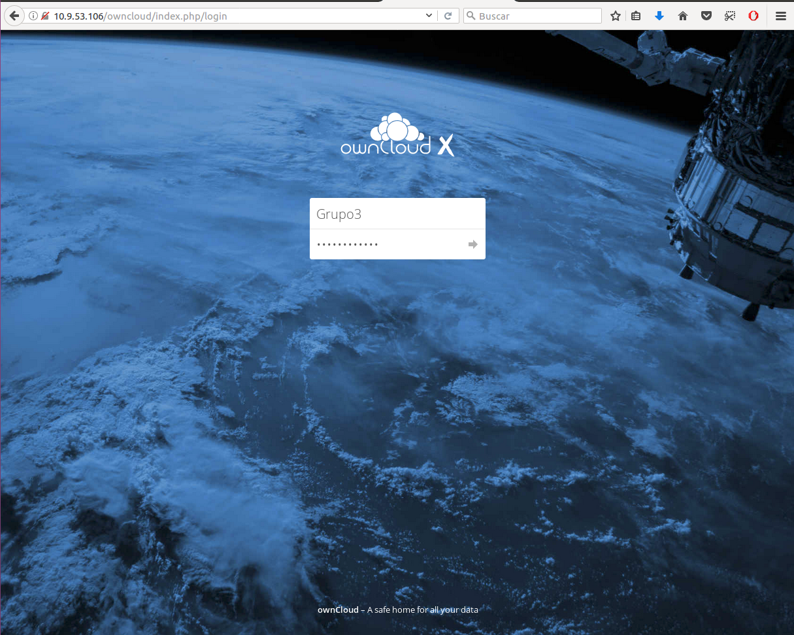
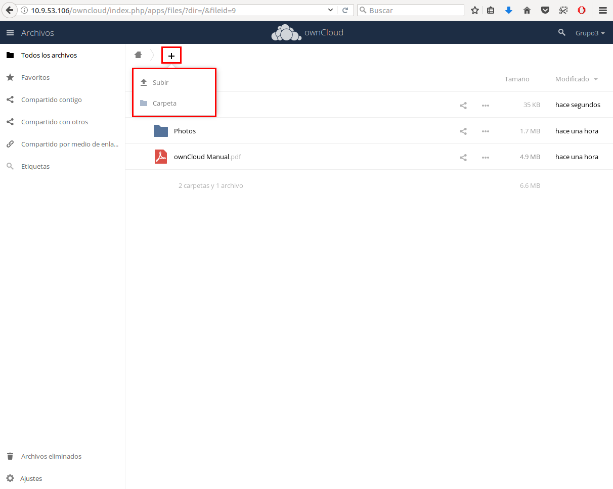
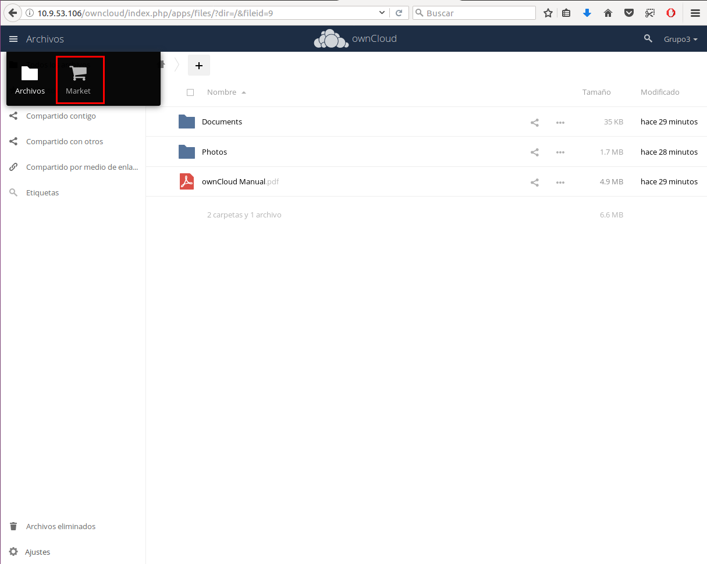
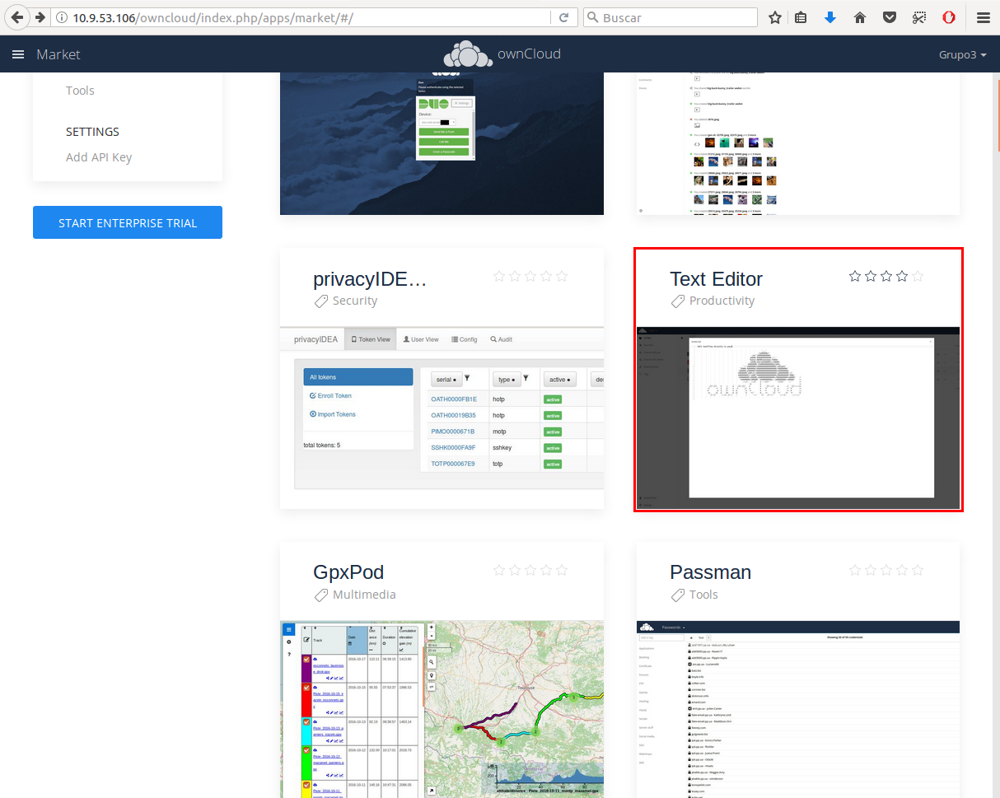
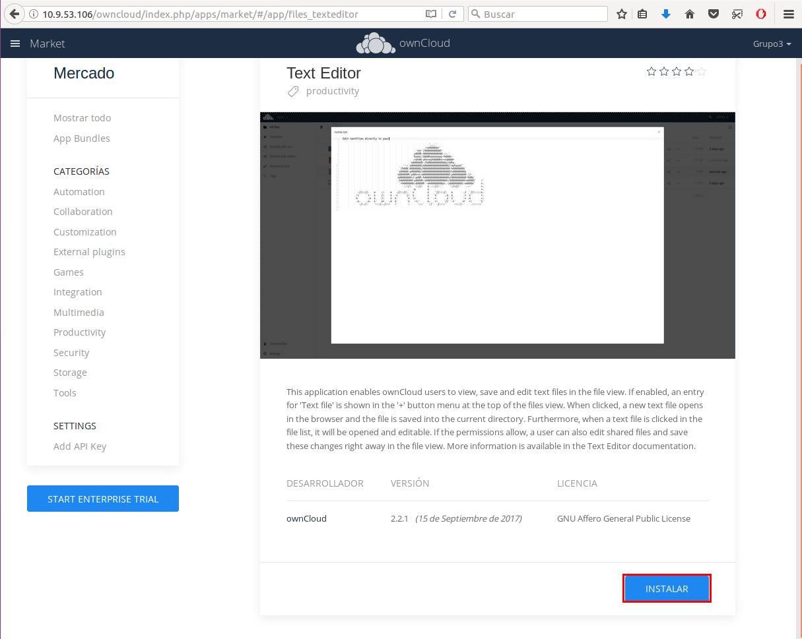
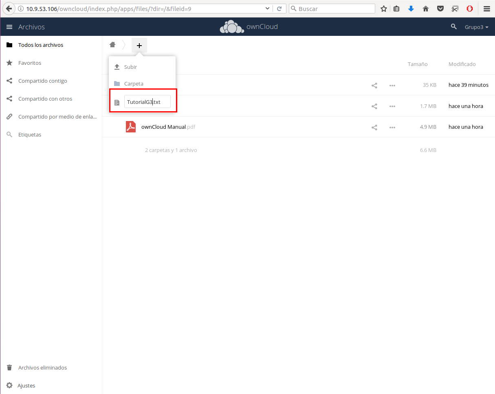

OwnCloud
-
Descarga OwnCloud
Lo primero sera descargar la ultima version de ownCloud, es muy facil de descargar ya que solo hay que comprobar que tenemos conexión a internet, y ecribir el siguiente comando:
wget http://download.owncloud.org/community/owncloud-latest.tar.bz2 Descomprimir
Lo que hemos descargado es un archivo comprimido, así que hay que descomprimirlo usando el comando tar el cual ya viene por defecto con ubuntu.
tar -xjf owncloud-latest.tar.bz2-
Mover Carpeta
Lo que obtendremos será una carpeta llamada “owcloud”, esa carpeta hay que moverla a nuestro /var/www/html/ para que sea accesible desde el navegador.
sudo mv owncloud /var/www/html/ -
Comprobar IP
Ahora, yendo al servidor y poniendo nuestra ip más “/owncloud” x.x.x.x/owncloud nos llevaría a la creación de usuario admin y conexión a la base de datos, pero aun no nos dejaría crearlos ya que no tiene permisos para modificar nuestra carpeta, así que hay que darle permisos, lo primero es entrar a la carpeta:
cd /var/www/html/ Dar Permisos
Una vez dentro, usaremos el siguiente comando para darle permisos de edición a nuestea carpeta ownCloud
sudo chown -R www-data:www-data owncloud-
Comprobar Errores
Una vez hecho esto, accederemos desde el navegador. Recordad que se accede asi... x.x.x.x/owncloud
 -
Resolver Errores
Puede que nos de algunos errores como se ve en la imagen anterior, así que habra que instalar algunos los siguientes paquetes.
apt-get install php7.0-url
apt-get install php7.0-SimpleXML
apt-get install php7.0-mbstring
apt-get install php7.0-zip
-
Reiniciar Servidor
Una vez instalados, reiniciamos nuestro apache, y volveremos a acceder
service apache2 restart Conexión MySql
Lo siguiente es crear una base de datos y un usuario que pueda acceder a dicha base de datos, para ello tendremos que entrar al MySql usando:
mysql -u root -pCreación BD
Ahora creamos una Base de Datos, para ellos usaremos:
CREATE DATABASE Grupo3BD;Creación Usuario
Ahora crearemos un usuario que pueda acceder a la base de datos:
GRANT ALL ON Grupo3BD.* TO Grupo3@'localhost' IDENTIFIED BY 'password';Salir MySql
Y ya habremos acabado de usar el MySql, saldremos de el escribiendo
quitConexion desde Owncloud
Ahora vamos al navegador y rellenaremos los campos acorde a la base de datos que hemos creado.
Logueo en OwnCloud
Cuando le demos a Completar la instalacion, nos pedira que nos logueemos, una vez dentro, ya tendremos nuestro owncloud listo para usarse
Interfaz Owncloud
Ahora ya podemos usar nuestro owncloud, pero no al 100%, solo podremos subir y descargar archivos aparte de compartirlos con otros usuarios
Owncloud Market
Desde ownCloud se pueden subir y descargar ficheros, pero no se pueden editar en línea, un plugin muy interesante sería el Text Editor, que nos permite editar en línea, para instalarlo hay que clicar en Archivos → Market, iremos al mercado de plugins de ownCloud
Text Editor
Buscaremos dicho Plugin, y clicamos en el.
Instalacion PlugIn
Y le damos a Instalar.
Comprobar PlugIn
Y ahora podremos crear y editar archivos .txt desde el propio ownCloud.
